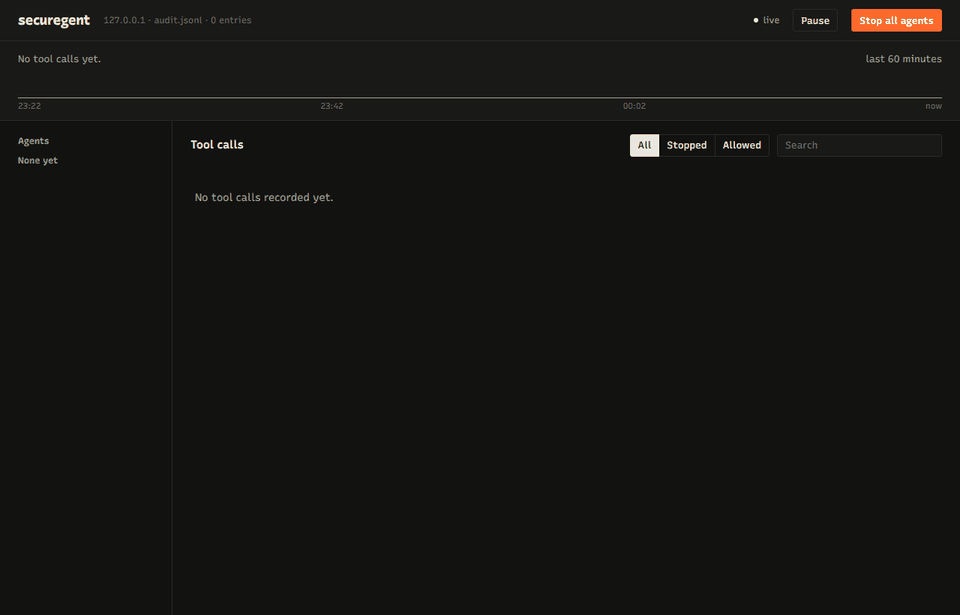

Securegent
A firewall for AI agents.
An agent that reads your email will, sooner or later, read an email written by an attacker. Securegent assumes the model will get fooled and limits what a fooled agent can do: every tool call is checked against who the agent is, a policy, and where its data came from, and it's logged before it runs.
- 14/14 red-team attacks stopped by the India-finance policy pack, with normal work still allowed
- MCP proxy tested live against the official filesystem server
- ~1 ms per check; approvals from a dashboard, Slack or Teams; SIEM export to Wazuh
- A final self-audit caught my own HTTP client leaking an auth token on redirects. Fixed in 0.3.0.
